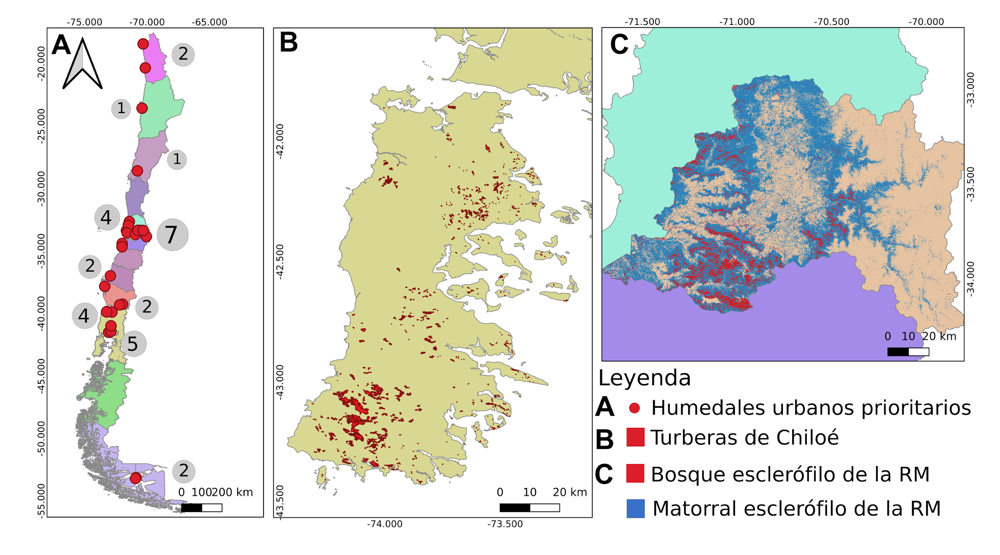

7 Área de Estudio
Considerando que se pretende realizar un sistema de detección de cambios por en ecosistemas naturales protegidos correspondientes a turberas de Chiloé, humedales urbanos y el bosque y matorral esclerófilo de la región Metropolitana Figure 7.1, a continuación se describir sus características.

7.1 Turberas en Chiloé
El concepto de turba debe ser entendido como un sedimento natural de tipo fitógeno, poroso, no consolidado, constituido por materia orgánica parcialmente descompuesta, acumulada en un ambiente saturado de agua. De esta forma, se puede entender al concepto de turbera como un depósito de turba con un espesor de, al menos, 30 cm. (Hauser 1996)
Las turberas solo cubren el 3 % de la superficie terrestre del planeta pero almacenan más carbono que todos los bosques de la Tierra si se mantienen húmedas.
Según (Hauser 1996) (Hauser 1996), el origen de las turberas se encuentra en las eras glaciares del Pleistoceno, cuando grandes extensiones de casquetes glaciares cubrieron el valle central de la Región de Los Lagos, incluyendo a la Isla Grande de Chiloé. El posterior retiro de los glaciares dejó masas de agua tierra adentro, formando los grandes lagos y lagunas glaciares que en la actualidad componen el paisaje de la región.
Revisar y papers:
Evaluation of impacts of management in an anthropogenic peatland using field and remote sensing data (Cabezas et al. 2015)
Using aboveground vegetation attributes as proxies.pdf (Lopatin et al. 2019)
Disturbance alters relationships between soil carb.pdf (Lopatin et al. 2022)
7.2 Humedales Urbanos
Por desarrollar …
7.3 Bosque y matorral esclerófilo de la región Metropolitana
Por desarrollar …